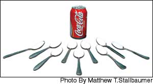

Issue #206 - October/November 2004
Surprising news about water, soda, juice, milk, coffee, tea and alcohol.
To your health!” That traditional toast captures what we are only now beginning to learn - that what and how much you drink may be just as important as what and how much you eat.
The average person needs about a milliliter of fluid for every calorie burned. That’s about eight 8-ounce glasses for a 2,000-calorie-a-day diet. Plenty of liquids fit the bill, but some are better than others, especially as routine thirst quenchers. Let’s take a look at each one. The “healthy” list might surprise you.
Water: Healthy And Cheap
For plain old topping off your tank, water is hard to beat. It has 100 percent of what you need - pure H 2 O - and no calories or additives. And when it comes from the tap, water costs a fraction of a penny per glass. You may have heard or read that you need to drink eight 8-ounce glasses of water a day in addition to whatever other beverages you drink. That’s actually a medical urban legend, one of those “facts” that is repeated so often it gains the ring of truth. In fact, almost any beverage will do.
Many people feel strongly that bottled water is better than tap water. Scientists have raised the possibility that the chlorine-based chemicals used to rid tap water of disease-causing bacteria can react with organic matter to create potentially cancer-causing compounds. Carcinogens can also leach into water supplies from leaking gasoline and underground storage tanks and from a variety of other sources.
But our public water supplies are generally very safe, and chlorination has saved countless lives by blocking the spread of infectious diseases. If there are risks to drinking tap water, they are very low compared with other “hazardous” habits. That said, the levels of chlorine in some city water can make it taste pretty bad. In this case, drinking bottled water is an inexpensive and healthy alternative to drinking soda, juice or other beverages in place of tap water.
Soda: Loaded with Sugar
Imagine dumping 7 to 9 teaspoons of sugar onto a bowl of cereal. Too sweet to eat? That’s how much sugar is in a 12-ounce can of Coca-Cola, Pepsi, Orange Crush or most other sugared soft drinks, and we drink the stuff by the gallon.
That’s a problem because most Americans already struggle to lose weight. One can of soda a day doesn’t seem like a big deal, but an extra 150 calories a day can translate into a 15-pound weight gain over a year! Also, high-sugar diets make the pancreas pump out more and more insulin, which may lead to diabetes.
What about calorie-free sodas? As a beverage they are better than the sugared versions, although they’re an expensive way to get water. Alarms have been sounded about the artificial sweeteners in calorie-free sodas, but despite the reports, this type of drink probably does not pose a health hazard. No one knows, though, how they may affect children who may consume large amounts over a lifetime. Why bother with the uncertainty when plain water or water with a twist of citrus are better options?
Juice: High-calorie
A glass of real juice gives you a glass of water plus some vitamins, minerals, maybe some fiber and a delightful taste. As a morning eye-opener or as a small part of your daily fluid requirement, real juice (as opposed to juice-flavored sugar water) can be an important part of a healthy diet. But as a regular beverage, fruit juice can slyly add a hefty daily dose of calories. A 12-ounce bottle or can of orange juice, for example, gives you 168 calories, or the equivalent of three chocolate-chip cookies. That’s an awful lot of calories if you just want something to quench your thirst. If you prefer juice, dilute it with water. Start with two parts juice to one part water and gradually work your way to one part juice to three or four parts water.
Walter C. Willett, M.D., chair of the Department of Nutrition at the Harvard School of Public Health, is a widely respected, independent scientist who has devoted his career to studying the complex connections between what we eat and our long-term health. This article is from Eat, Drink and Be Healthy, by Dr.Willett,, with P.J. Skerrett. Copyright © 2001 by the President and Fellows of Harvard College. Reprinted by permission of Free Press, a Division of Simon & Schuster, Inc., N.Y.- Mother
Among the many types of juice, grapefruit stands out from the pack because it changes the way some people absorb and metabolize different drugs. For example, grapefruit juice can reduce the absorption of the allergy medication fexofenadine (Allegra), and of digoxin, which is used to treat congestive heart failure. Second, something in grapefruit juice may create conditions that help form kidney stones. While more research is needed to confirm this finding, it’s a good reason not to have grapefruit juice every day.
Milk: Optional for Adults
The question of how dairy products affect our health is a complex subject that I will not fully explore here, but there are more reasons not to drink milk in large amounts than there are to drink it, including factors such as lactose intolerance, saturated fat, extra calories, a possible increased risk of prostate cancer and a possible increased risk of ovarian cancer. I don’t recommend milk as a beverage for adults. Instead, think of it as an optional food, not the two-to-three servings a day requirement described in the USDA Food Guide Pyramid.
Coffee: Surprisingly Safe
Here’s something you may not have expected to hear me say: Coffee is a remarkably safe beverage. Its dubious health reputation, which stretches back hundreds of years, is more image than substance.
Over the years, dozens of studies have been done on the health effects of coffee. A few early ones linked the bitter brew with breast cancer, pancreatic cancer and heart disease, but many of these didn’t take into account a key habit - cigarette smoking - that once went hand-in-hand with coffee drinking. More carefully controlled studies eventually showed that it was the smoking, not the coffee drinking, that accounted for the health problems.
In moderation, coffee is low on the list of health risks and even has a number of benefits. These include a lower chance of developing kidney stones and gallstones, and fewer suicides because coffee (and other caffeinated beverages) may act like mild antidepressants. One lingering concern about coffee is its potential for increasing bone loss and risk of fracture. Increased risks with four or more cups per day have been seen in several studies, but the final answer is unknown. Given the body of research on coffee, however, it’s safe to say that there aren’t any major health hazards lurking in the depths of your cup.
Tea: Unproven Benefits
The health-promoting properties long ascribed to tea are only now receiving the careful scientific scrutiny they deserve. Some of the benefits attributable to coffee also apply to tea, including a gentle mental and physical pick-me-up, and lower risk of kidney stones and gallstones. Some studies have suggested that drinking green tea may lower rates of some cancers, particularly stomach cancer. Nutrients abundant in tea have been shown in the laboratory to inhibit early steps leading to cancer. In humans, though, the evidence is mixed and is now pointing toward little anticancer effect, if any. For now, don’t count on tea to bring any special benefits besides a reduced risk of kidney stones and a pleasant way to begin and end the workday.
Alcohol: A Gender Difference
Concerns about alcohol are definitely justified. Heavy drinking is a major cause of preventable deaths in the United States. It contributes to liver disease, a variety of cancers, high blood pressure, so-called bleeding strokes, and a progressive weakening of the heart and other muscles. Furthermore, too much alcohol can dissolve the best of intentions and the closest of relationships.
Alcohol in moderation, though, is probably good for most people. There is clear evidence that moderate alcohol consumption protects against heart disease and the most common kind of stroke, and mounting evidence that it protects against diabetes and gallstones. Drinking alcohol helps raise levels of HDL, the protective form of cholesterol, and also reduces formation of the clots that block arteries in the heart, neck and brain and ultimately cause heart attacks and many strokes.
Exactly how many drinks is moderate? That’s the focus of intense research. For men, study after study has shown that those who have one or two alcoholic drinks a day are 30 to 40 percent less likely to have heart attacks than men who don’t drink at all. For men with diabetes, a drink or two a day has similar benefits.
For women, the definition of moderate is more difficult. Women, too, benefit from alcohol’s ability to raise HDL and prevent clot formation. But studies have shown that two drinks a day increase the chance of developing breast cancer by 20 to 25 percent. More than 10 times as many women die each year from heart disease as from breast cancer, yet deaths from breast cancer tend to be at a much younger age than those from heart disease. New evidence from large prospective studies of women shows that the increased risk of breast cancer linked to drinking alcohol is seen mostly in women who don’t get enough of the B vitamin known as folic acid in their diets, so getting enough folic acid is especially important for those who drink alcohol. You can get the recommended daily allowance of 400 micrograms from a multivitamin or from a mix of dietary sources including orange juice; green, leafy vegetables; dried beans and legumes.
Moderate alcohol consumption protects against heart disease and the most common kind of stroke, and may protect against diabetes and gallstones.
Early studies suggesting that moderate alcohol consumption could prevent heart disease uncovered the French paradox - the unexpectedly low rate of heart disease in France, despite a typically high-fat diet. Some researchers suggested that red wine was the answer, something the wine industry heavily and heartily endorsed. It’s now clear that red wine alone isn’t the reason for the low heart disease rates, but the overall diet and lifestyle in parts of France may account for some of the protection against heart disease. What’s more, a number of recent studies have shown that any alcohol-containing beverage offers the same benefits. Red or white wine, beer, cordials or spirits such as gin or Scotch whiskey all seem to have the same effect on cardiovascular disease when taken in moderation and preferably with meals.
My recommendation is that if you already drink alcohol, keep it moderate. If you don’t, don’t feel compelled to start - you can get similar benefits by beginning to exercise (if you don’t already) or boosting the intensity and duration of your activity. And as usual, including your health care provider in important decisions about diet and lifestyle is a good idea.
|
 A single, 12-ounce can of soda contains the equivalent of between seven and nine teaspoons of sugar. |
Men who have one or two alcoholic drinks a day are less likely to have heart attacks. Women benefit from alcohol’s ability to protect heart health, too, but studies show as few as two drinks a day also can increase their risk of breast cancer, especially among women who don’t have enough folic acid in their diets. |
|